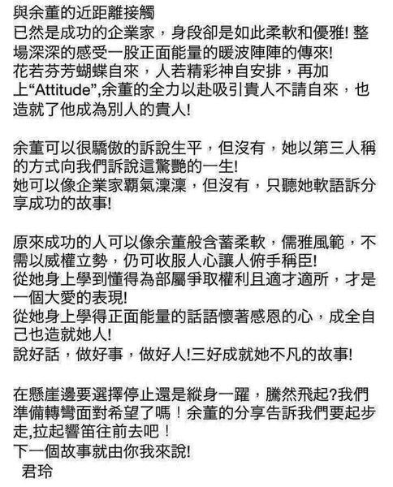
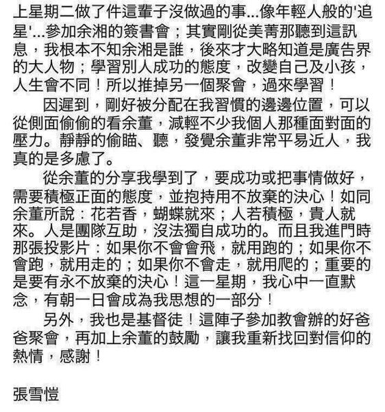
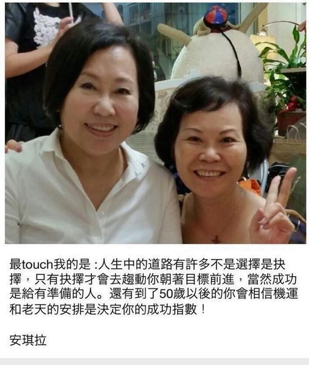
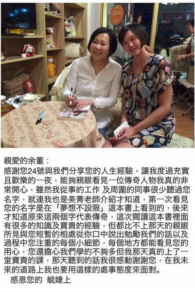

廣告教母余湘是誰? 親民黨副總統提名人

余湘：愚公移山精神改造台灣
不容藍綠撕裂台灣 親民黨副總統候選人余湘今天受雲林縣虎尾厝沙龍獨立書店邀請發表參選理念，她強調不論選局變化如何，將本著愚公移山的精神走完選舉這條路，即便選完也會將此精神繼續延傳下去，台灣不容藍綠撕裂大家情感，她相信黨主席宋楚瑜的十大政見，可打造一個和樂安康的台灣。 長期倡議「生活即政治」的虎尾沙龍獨立書店負責人、前立委王麗萍，認為打破藍綠結構是台灣民主當前的必要工作，安排一系列「2020大選公民沙龍」，期待藉此讓民主政治意識與選舉文化能點滴的改變，進而讓台灣的政治權力重組，推動台灣民主的二次革命，第一場邀請余湘主講。 親民黨總統候選人宋楚瑜，上午錄製支持者的創作歌曲「人在做天在看」。 記者林俊良／攝影 余湘說，不能為贏扭曲信念，當初她是勸宋主席不要選，沒想到被宋的十大治國政見和理念所吸引，反而被宋勸進參選，這都是人生的意外，回顧2008年因血管瘤險奪走性命，後來好起來，到投入選舉，感謝上帝賦予她這個責任。 把農委會搬到雲林 余湘以公司兩主管老為理念惡鬥為例，強調這樣公司怎會做得好，她說，未來會本著愚公移山精神參加這場選舉，不管選得如何，這種精神得繼續延傳。雲林是農業大縣，一旦當選會把農委會搬到雲林來，為拉近城鄉差距，未來也會把行政中心和立院搬到中部。 余湘送書給王麗萍，多位關切環保和友善農業議題的人士也到場和余湘對話，談環保、談農業、政治即生活及國政等議題，期待帶給這場藍綠大戰中，一個真實、理想的選擇。王麗萍強調宋楚瑜上次民調2%卻拿下100多萬票，現今民眾討厭藍綠，宋主席和郭台銘結合，將帶給台灣人民一個新選擇。
為高雄吳益政加油親民黨余湘：台灣已空轉2、30年
親民黨副總統候選人余湘今天下午到高雄，為高雄市第六選區親民黨立委參選人吳益政加油、打氣。余湘透露，當時原本是和于美人要跟宋楚瑜游說，叫他不要選，沒想到到頭來，反而被宋楚瑜感動，兩人也跳下來參與選舉，只是心中都有一個信念，就要為台灣好。 親民黨副總統候選人余湘今天到高雄參加簽書會後，特地到第六選區親民黨立委參選人吳益政競選總部加油、打氣。 余湘說，當初宋楚瑜找她時，她就和先生在家演練，想說要如何勸選宋楚瑜，隔天找于美人跟她作伴，本來是勸宋主席不要選，沒想到被宋的治國政見和理念所吸引，反而被勸進參選。 余湘說，之所以和于美人要和宋楚瑜走這 「終局之戰」，就是被宋楚瑜感動，宋一生從政被抹黑、曲解 。她說，當時宋楚瑜講了一句話讓她非常感動，宋說，已是77歲遲暮之年，就算拚了最後一口氣，也要為台灣人民和台灣這塊土地做出最後的貢獻。 余湘說，台灣 好像除了藍和綠之外，就沒有別的顏色，「好像你不投韓國瑜，中華民國就亡國了，你不投蔡英文，就好像台灣的主權就不見了」，但她覺得民主自由是台灣共同的「DNA」，就是我們一定要守護的，所以她覺得這次出來參選，不是為了政黨，不是為了個人，而是為台灣好。 余湘說，其實她在台北事業做得還不錯，為何要跳進來（選舉），就是因為台灣以前是四小龍之首，結果現在排名不知在哪？更遑論說已變成小蟲，「而且這隻小蟲還變得奄奄一息了!」 余湘說，2、30年來，台灣一直在空轉，藍和綠站在兩邊的極端，彼此拉扯，變得大家無法真正、好好地為台灣的前途努力，「所以才站出來，就是為台灣人民要贏嘛!」 吳益政呼籲大家政黨要投給小黨，才可以達到制衡的效果，對台灣的民主發展才是好的。
廣告教母余湘 - 總機小姐變身20億富豪傳奇
余湘出書 總機妹變媒體教母 有「媒體教母」稱號的群邑集團總裁暨董事長余湘，從總機小妹做起，現已掌握全台每年四分之一（超過100億元）廣告預算，成為全台最大媒體採購集團總裁。沒有顯赫學歷背景的她，憑著正向態度與拚勁，打造事業奇蹟。 余湘的人生一直不斷創造出奇蹟，她的最新著作《我是余湘－CHAIRWOMAN》（寶瓶文化出版），詳述她從總機小妹做起，到全台最大媒體購買集團總裁的故事；還分享了她生命中奇蹟，如何戰勝病魔重燃生命動力。 余湘表示，她原先沒打算出書，但3年前大病重生後，她認為老天既給她機會，跟大家分享生命故事，就不該放棄出書機會。 她說，對於人生所遭遇的各項難題，轉化為正向力量勇於面對解決，是她成功的秘訣。她出書不為個人利益，她將捐出全數版稅做公益。 余湘重病期間老公無微不至的照護，與鶼鰈情深的夫妻之情，也感動了許多看過這本書的好朋友們。三立電視董事長張榮華說，看到書中余湘在加護病房時，人稱「吳哥哥」的余湘老公，苦苦央求醫院讓他在加護病房24小時陪伴，令人為之動容，他認為「台灣的已婚男人都該看這本書」。 【2011/03/10 聯合報】 http://mag.udn.com/mag/reading/storypage.jsp?f_ART_ID=306002


廣告教母余湘 總機小姐變身20億富豪傳奇
求職的時候，總是要丟好幾封履歷表，才能獲得工作回音，不過您相信嗎？有人一路以來，都是被挖角的。

這個人就是現在台灣最大媒體購買集團總裁，余湘，從總機小妹開始，余湘就秉持著永遠為客戶多想一點、多做一點這樣的理念，成功改變電視台、廣告公司以及客戶之間的合作關係。

平均大約3支廣告就有1支來自於她，現在她出書把自己成功的經驗分享給大家，希望也有人能夠創造傳奇。 來源：TVBS
影片: 廣告教母余湘 總機小姐變身20億富豪傳奇
